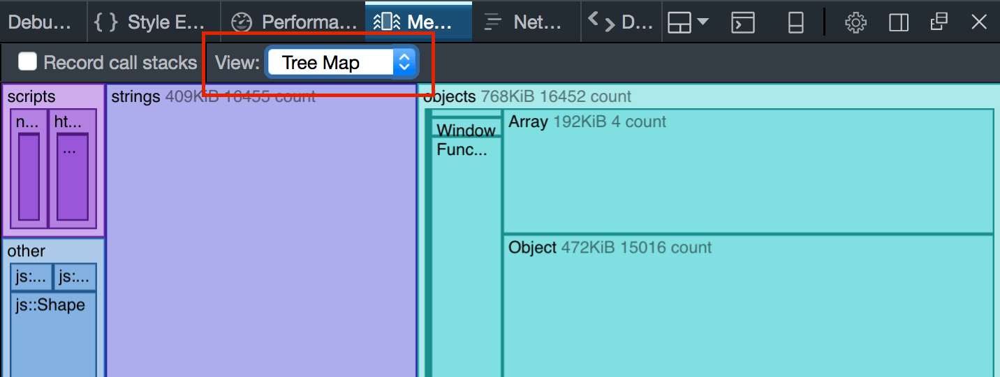
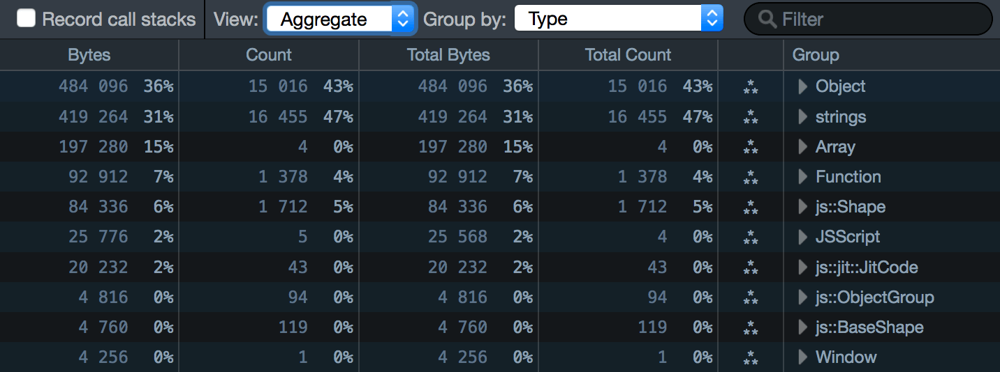
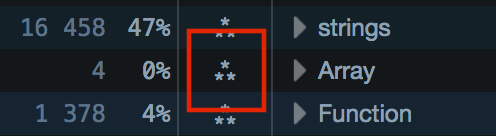
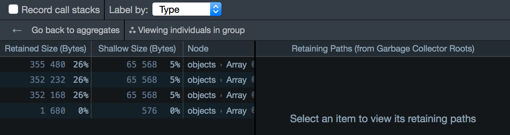
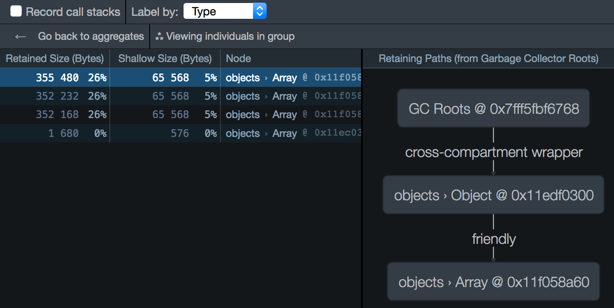
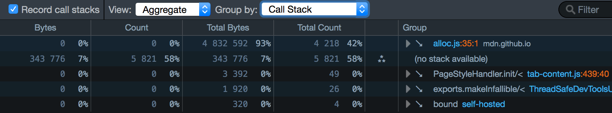
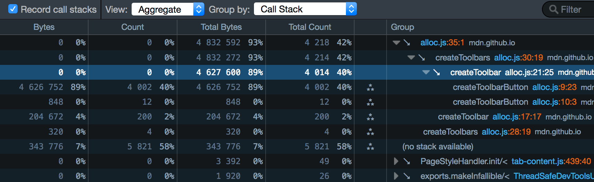
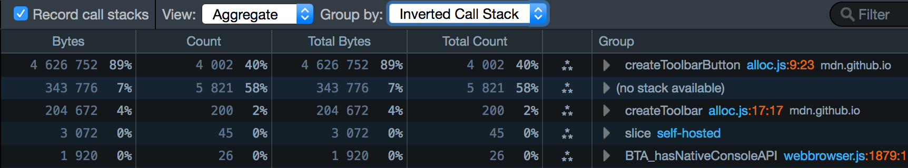

Before Firefox 48, this was the default view of a heap snapshot. After Firefox 48, the default view is the Tree map view, and you can switch to the Aggregate view using the dropdown labeled "View:":

The Aggregate view looks something like this:

It presents a breakdown of the heap's contents, as a table. There are three main ways to group the data:
You can switch between them using the dropdown menu labeled "Group by:" located at the top of the panel:
There's also a box labeled "Filter" at the top-right of the pane. You can use this to filter the contents of the snapshot that are displayed, so you can quickly see, for example, how many objects of a specific class were allocated.
This is the default view, which looks something like this:
It groups the things on the heap into types, including:
Function or ArrayHTMLSpanElement or Window"strings"JSScript"js::Shape". These are prefixed with "js::".Each type gets a row in the table, and rows are ordered by the amount of memory occupied by objects of that type. For example, in the screenshot above you can see that JavaScript Objects account for most memory, followed by strings.
For example, in the screenshot above, you can see that:
Array objectsNext to the type's name, there's an icon that contains three stars arranged in a triangle:

Click this to see every instance of that type. For example, the entry for Array tells us that there are four Array objects in the snapshot. If we click the star-triangle, we'll see all four Array instances:

For each instance, you can see the retained size and shallow size of that instance. In this case, you can see that the first three arrays have a fairly large shallow size (5% of the total heap usage) and a much larger retained size (26% of the total).
On the right-hand side is a pane that just says "Select an item to view its retaining paths". If you select an item, you'll see the Retaining paths panel for that item:

{{EmbedYouTube("uLjzrvx_VCg")}}
The Call Stack shows you exactly where in your code you are making heap allocations.
Because tracing allocations has a runtime cost, it must be explicitly enabled by checking "Record call stacks" before you allocate the memory in the snapshot.
You'll then see a list of all the functions that allocated objects, ordered by the size of the allocations they made:

The structure of this view is very much like the structure of the Call Tree, only it shows allocations rather than processor samples. So, for example, the first entry says that:
We can use the disclosure triangle to drill down the call tree, to find the exact place your code made those allocations.
It's easier to explain this with reference to a simple example. For this we'll use the DOM allocation example. This page runs a script that creates a large number of DOM nodes (200 HTMLDivElement objects and 4000 HTMLSpanElement objects).
Let's get an allocation trace:
{{EmbedYouTube("DyLulu9eoKY")}}
You should see something like this:
This is telling us that 93% of the total heap snapshot was allocated in functions called from "alloc.js", line 35 (our initial createToolbars() call).
We can use the disclosure arrow to expand the tree to find out exactly where we're allocating memory:

This is where the "Bytes" and "Count" columns are useful: they show allocation size and number of allocations at that exact point.
So in the example above, we can see that we made 4002 allocations, accounting for 89% of the total heap, in createToolbarButton(), at alloc.js line 9, position 23: that is, the exact point where we create the {{HTMLElement("span")}} elements.
The file name and line number is a link: if we click it, we go directly to that line in the debugger:
{{EmbedYouTube("zlnJcr1IFyY")}}
The Call Stack view is top-down: it shows allocations that happen at that point or points deeper in the call tree. So it's good for getting an overview of where your program is memory-hungry. However, this view means you have to drill a long way down to find the exact place where the allocations are happening.
The "Inverted Call Stack" view helps with that. It gives you the bottom-up view of the program showing the exact places where allocations are happening, ranked by the size of allocation at each place. The disclosure arrow then walks you back up the call tree towards the top level.
Let's see what the example looks like when we select "Inverted Call Stack":

Now at the top we can immediately see the createToolbarButton() call accounting for 89% of the heap usage in our page.
In the example above you'll note that 7% of the heap is marked "(no stack available)". This is because not all heap usage results from your JavaScript.
For example:
Many real-world pages will have a much higher "(no stack available)" share than 7%.